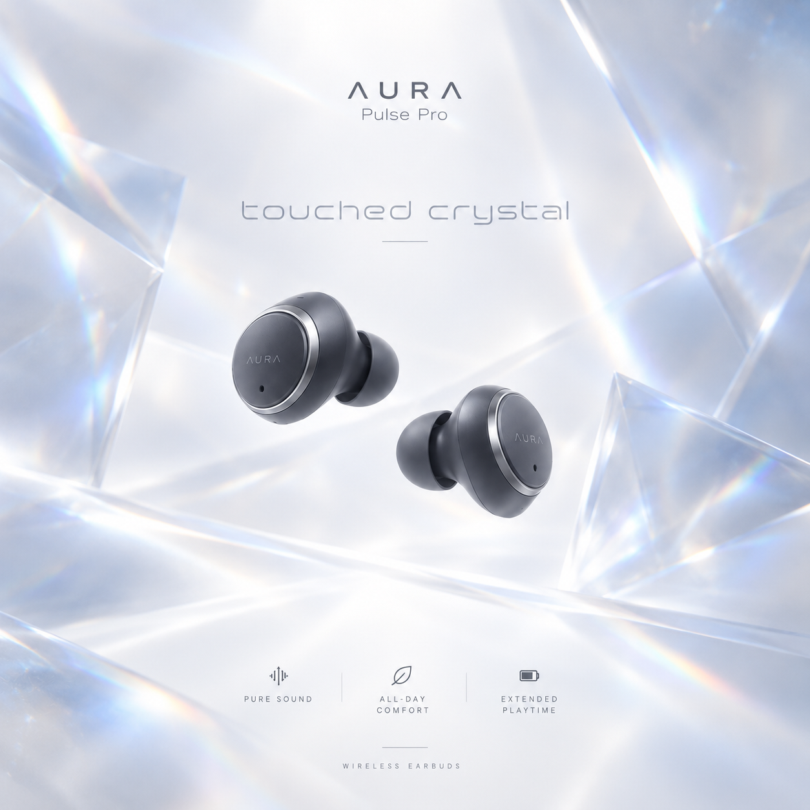
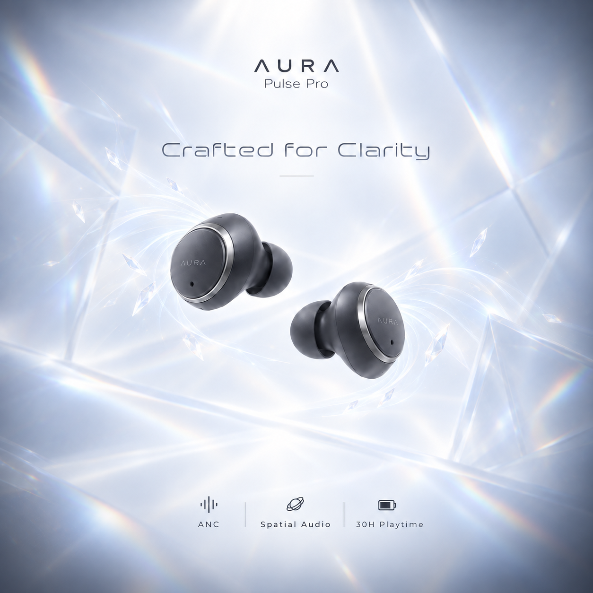
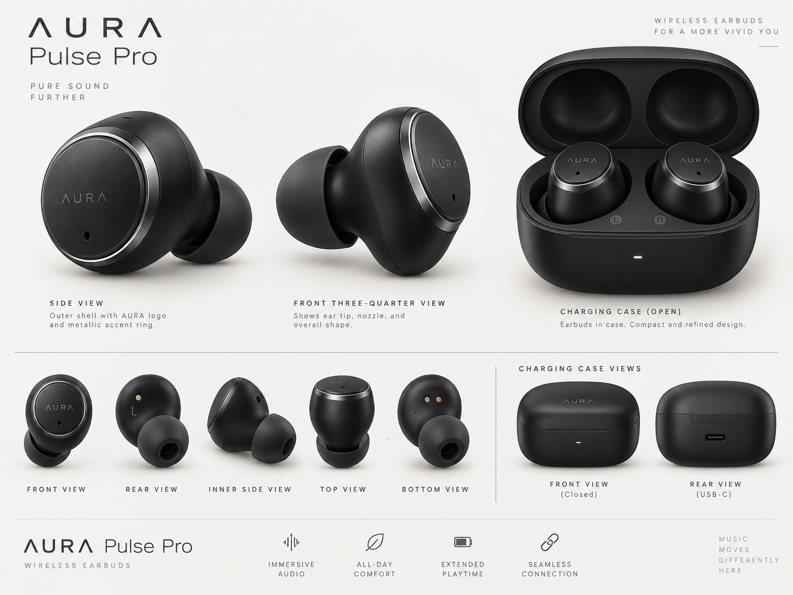
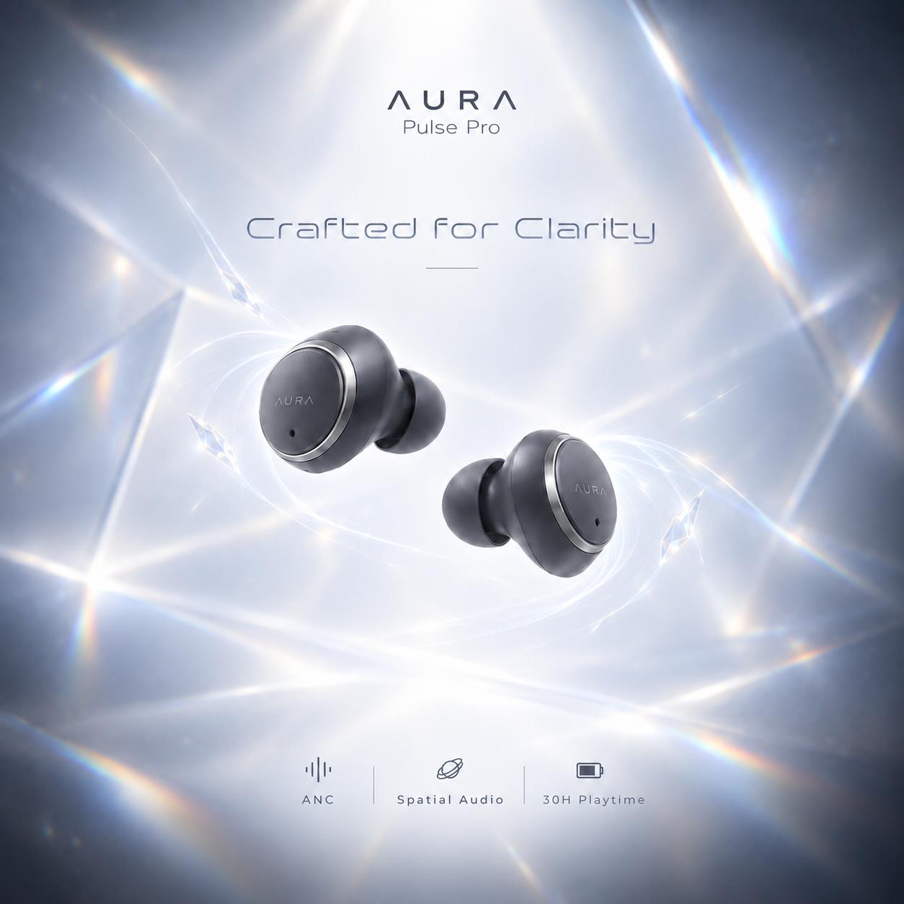

Test 01 — Crystal Clarity
The first concept communicated the idea of crystal-clear sound, but the immersive feeling was missing. It felt more like a clean product visual than a listening experience.
A wireless earbuds concept focused on clarity, precision and immersive sound through a clean, premium visual language.

The final image balances crystal-inspired elements with a cleaner composition, suggesting both clear sound and an immersive listening experience without overwhelming the product.
The crystal forms are used as a visual metaphor for clean, precise sound — giving the image a sharp and transparent character.
The surrounding movement and elements create a sense of sound wrapping around the listener, helping communicate immersion rather than only technical clarity.
The reference was used to keep the earbuds recognizable while building a more expressive advertising world around their intended sound characteristics.


The first concept communicated the idea of crystal-clear sound, but the immersive feeling was missing. It felt more like a clean product visual than a listening experience.

The second direction brought the sound closer around the ears and improved the sense of immersion, but the visual elements became too exaggerated and started competing with the product.
The final image combines the strengths of both tests: crystal-inspired clarity and a surrounding sense of sound, while reducing the amount and intensity of the supporting elements. The goal was a clean visual that communicates the listening experience while keeping the earbuds as the focus.